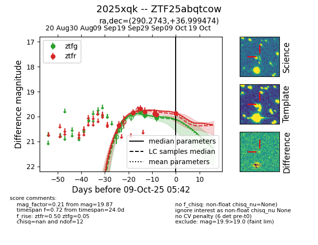
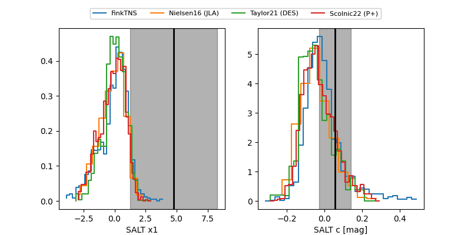

FINK: ZTF25abqtcow
Lasair: ZTF25abqtcow
ALeRCE: ZTF25abqtcow
TNS: 2025xqk
YSE: 2025xqk
ZTF25abqtcow (ztf,fink)
2025xqk (tns,yse)
equatorial (ra, dec) = (290.2743,+36.99947)
galactic (l, b) = (69.2716,+10.52628)


last ztfg=20.03, ztfr=19.87
3 ztfg, 7 ztfr detections